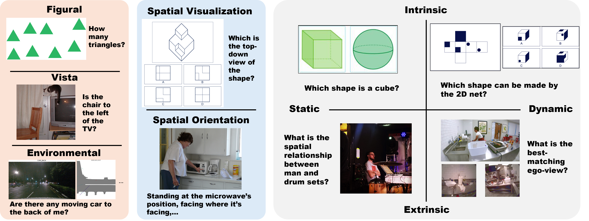
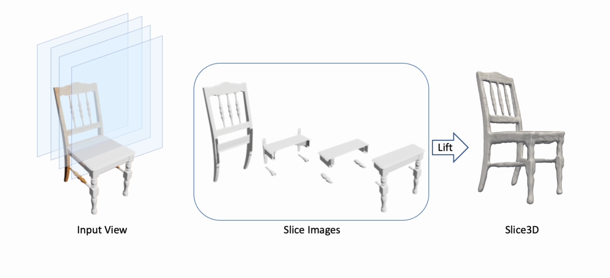

|
Wenqi Wang (王文琦)
Hello! I am a Ph.D. student in Computer Science at Boston University, where I am fortunate to be advised by Prof. Boqing Gong.
I completed my Bachelor's degree in Computer Science and Technology at Tsinghua University. My research focuses on computer vision, with a particular interest in vision-language foundation models and their
applications in understanding and generating multimodal content.
Email /
CV /
Google Scholar /
Twitter /
Github
|
|
|

|
SITE: towards Spatial Intelligence Thorough Evaluation
Wenqi Wang,
Reuben Tan,
Pengyue Zhu,
Jianwei Yang,
Zhengyuan Yang,
Lijuan Wang,
Andrey Kolobov,
Jianfeng Gao,
Boqing Gong
ICCV, 2025
project page
/
code
/
arXiv
We curate a benchmark combining a bottom-up survey and a top-down strategy drawing upon three classification systems
in cognitive science, including 31 computer vision datasets and 8000+ evaluation samples.
|
|

|
Slice3D: Multi-Slice, Occlusion-Revealing, Single View 3D Reconstruction
Yizhi Wang,
Wallace Lira,
Wenqi Wang,
Ali Mahdavi-Amiri,
Hao (Richard) Zhang,
CVPR, 2024
project page /
arXiv /
code /
video
Our single-view 3D reconstruction method, Slice3D, predicts multi-slice images to reveal occluded parts without
changing the camera (in contrast to multi-view synthesis), and then lifts the slices into a 3D model.
|
- I enjoy photography in my spare time. Check out my gallery!
- I have served as reviewer for various conferences and journals including CVPR, ICCV.
|
|
{kind=link}